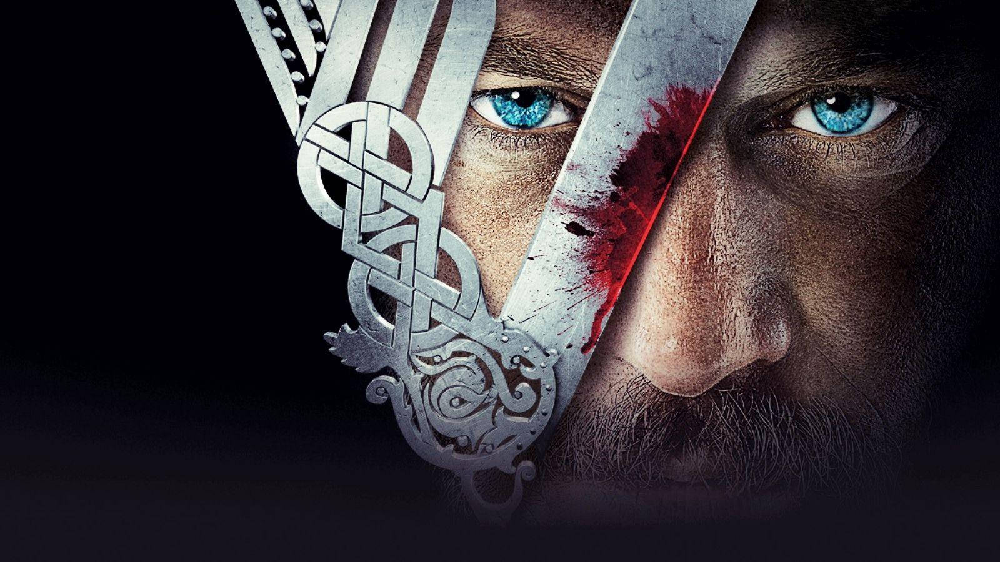
 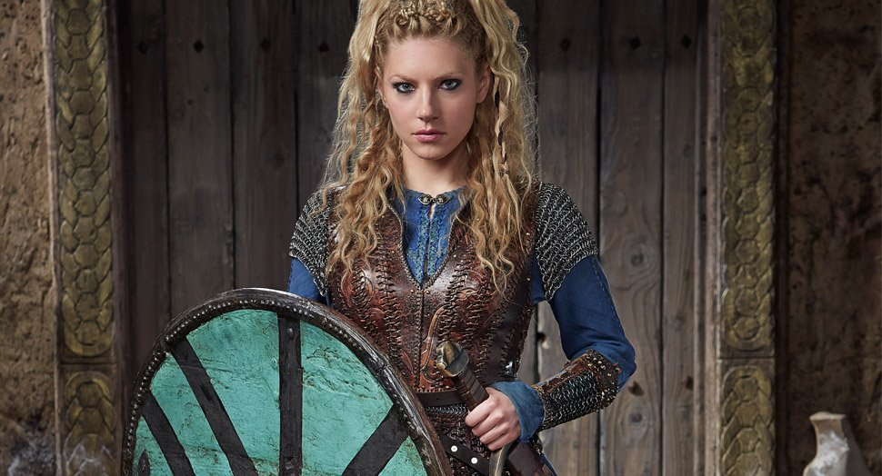
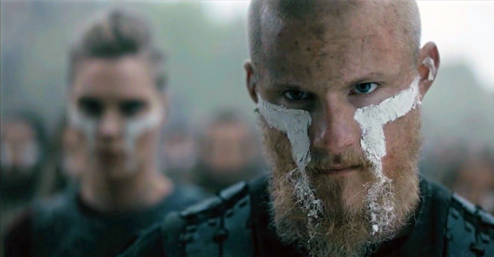
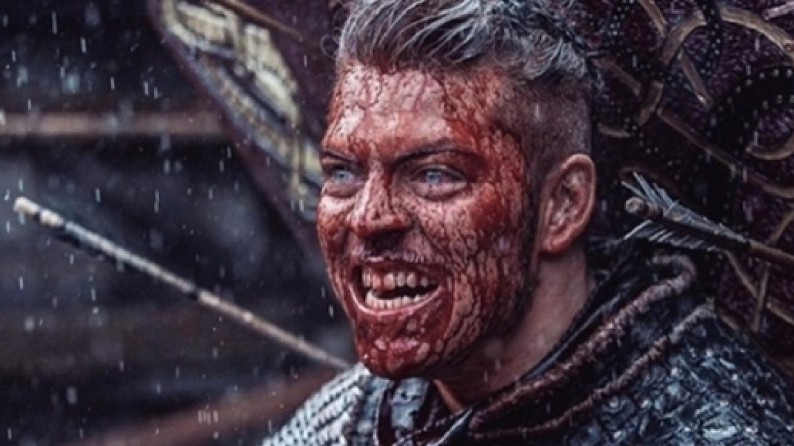
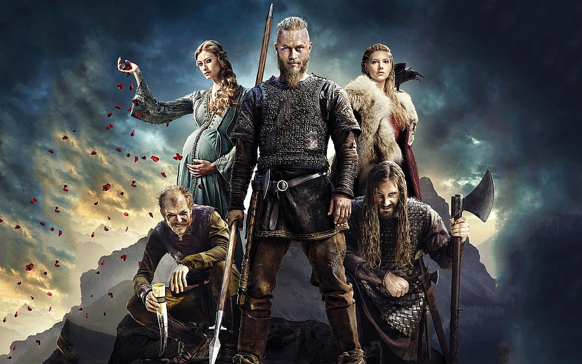
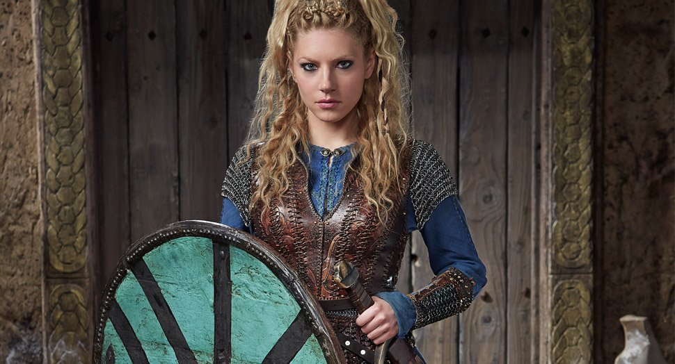
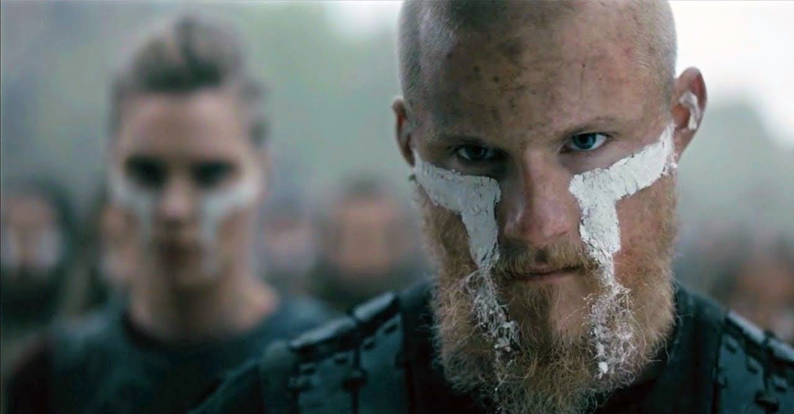
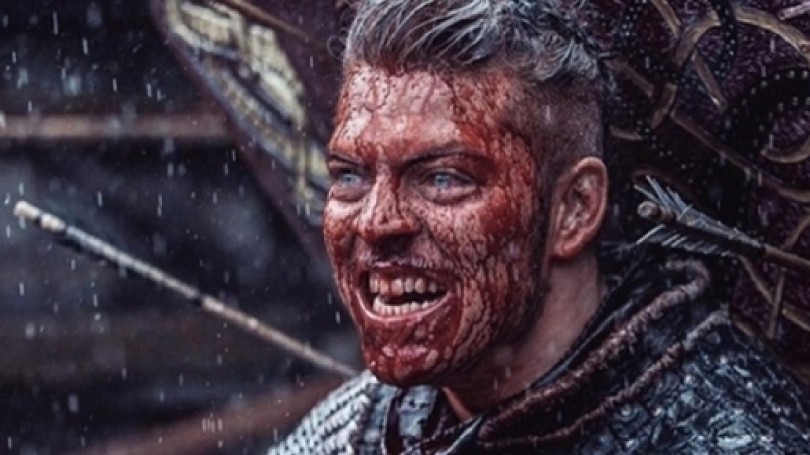
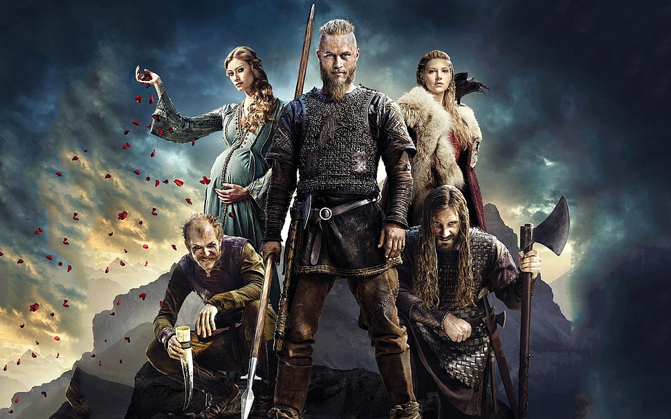
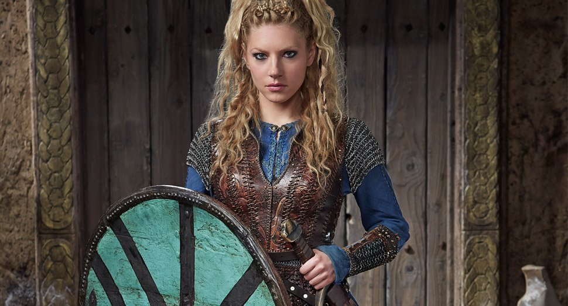
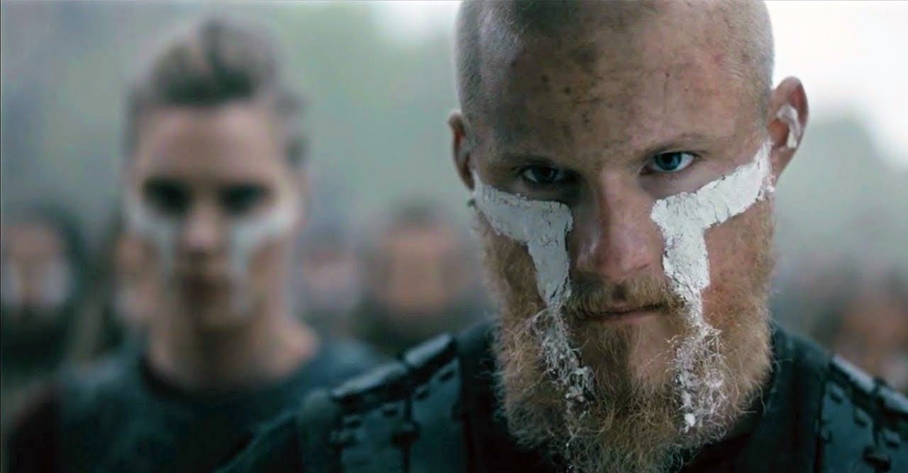
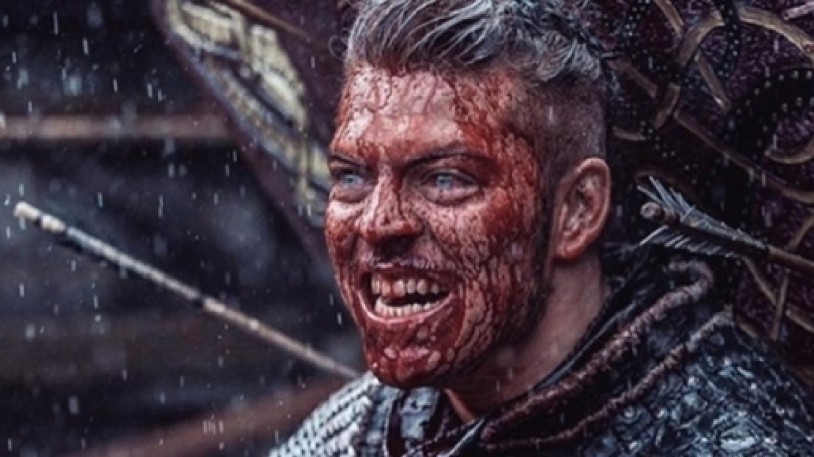
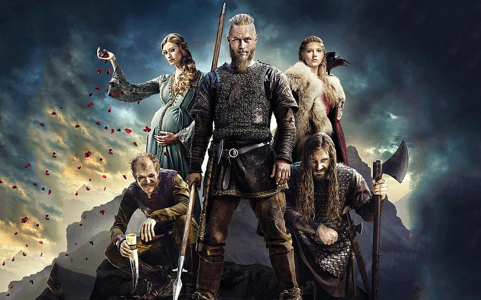
Vikings é uma série de televisão de drama histórico escrita e criada por Michael Hirst. Vikings é inspirada nas sagas do Viking Ragnar Lodbrok, um dos mais conhecidos heróis nórdicos lendários e chamado de flagelo da Inglaterra e da França. A série retrata Ragnar como um fazendeiro que alcança a fama por seus ataques bem-sucedidos na Inglaterra e, mais tarde, se torna um Rei escandinavo, com o apoio de sua família e colegas guerreiros.